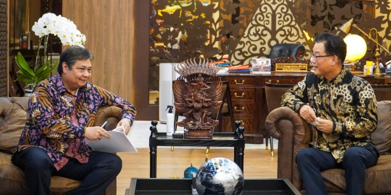

Indonesia-Korsel Bahas Kerja Sama Ekonomi Digital
ditulis olehdimashidayatullohpada 8 November 2022.
Jakarta Pusat, Kominfo - Hubungan bilateral Indonesia dan Korea Selatan semakin erat dan menunjukkan banyak peningkatan kerja sama. Saat ini Korea Selatan menduduki peringkat ke-7 realisasi investasi di Indonesia pada periode Januari-September 2022 yang nilai investasinya mencapai USD1,66 miliar dengan total 4.016 proyek.
“Tentunya investasi ini berkontribusi besar dalam pembangunan industri dan penciptaan lapangan kerja di Indonesia,” tutur Menteri Koordinator Bidang Perekonomian Airlangga Hartarto saat melakukan pertemuan dengan Duta Besar Korea Selatan untuk Indonesia YM. Park Tae-Sung di Kantor Kementerian Koordinator Bidang Perekonomian, Jakarta Pusat, Senin (07/11/2022).
Kunjungan Duta Besar Park Tae-Sung ini adalah guna mendorong peningkatan kerja sama Indonesia dengan Korea Selatan. Kerja sama yang dimaksud diantaranya melalui pelaksanaan Indonesia-Korea Business Roundtable dan penandatanganan MoU kerja sama ekonomi digital antara Menko Airlangga dengan Menteri Perdagangan, Industri dan Energi Korea Selatan, yang direncanakan akan dilaksanakan di sela-sela KTT G20 nanti di Bali.
Menko Airlangga berharap akan terus ada peningkatan kerja sama yang sudah baik ini, terutama di sektor transisi energi, kesehatan dan ekonomi digital. Menko Airlangga juga mengapresiasi selesainya proses perundingan Perjanjian Ekonomi Komprehensif Indonesia Korea (IKCEPA) dan mendorong perjanjian tersebut untuk dapat segera diimplementasikan pada Januari 2023.
Selain itu, Menko Airlangga juga menyambut baik pelaksanaan Indonesia-Korea Business Roundtable di sela pertemuan KTT G20 di Bali. Pertemuan ini dapat mendorong penguatan kerja sama sektor swasta dua negara dan memberikan wadah pengusaha Indonesia dan Korea Selatan dapat berdiskusi dan mengembangkan jaringan usahanya di pasar domestik masing-masing.
Menko Perekonomian juga mendorong dapat ditandatanganinya MoU Ekonomi Digital antara Kemenko Perekonomian dan Ministry of Trade, Industry and Economy (MOTIE) Korea Selatan. MoU ini dapat menjadi payung kerja sama di sektor ekonomi digital yang lebih luas dan menjadi landasan pengembangan kerja sama digital ekonomi sektor swasta dua negara.
sumber